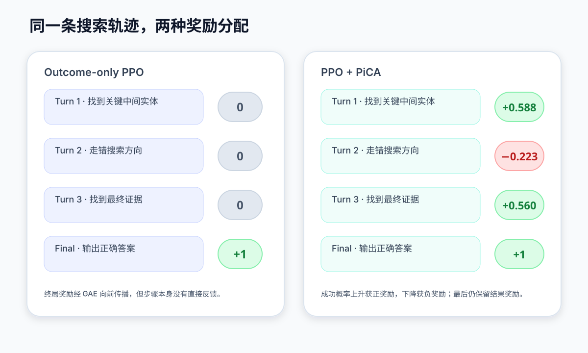
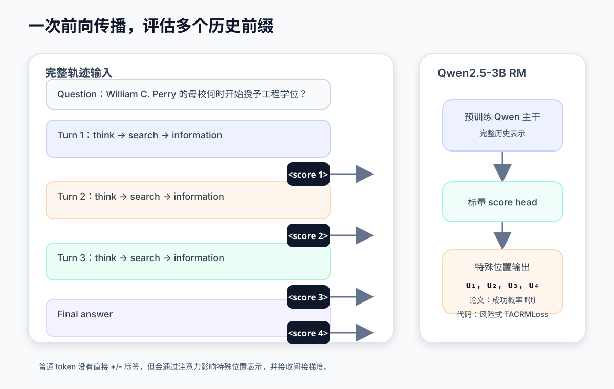
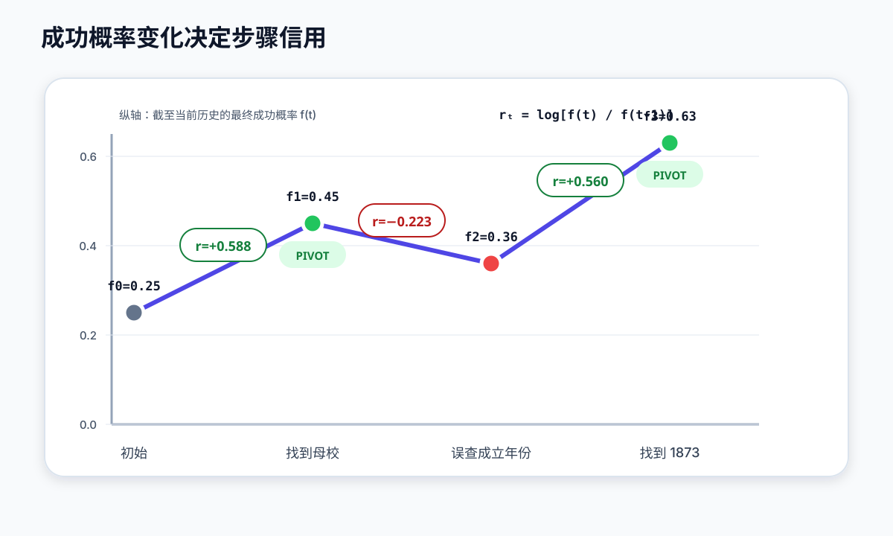
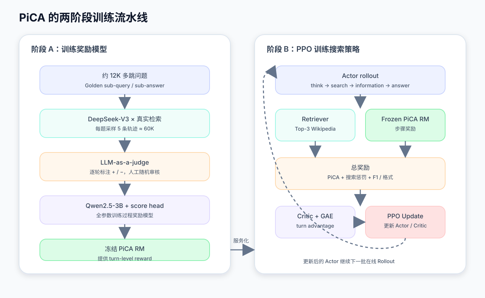

多跳搜索 Agent 通常在回答结束时才收到答案 F1。假设一条轨迹搜索了四轮：前两轮找到正确实体，第三轮混淆关系，第四轮又把方向修正回来。最终答案虽然正确，但单个终局分数并不能说明第三轮有害，也不能说明第四轮是关键转折。这就是 PiCA 要处理的信用分配问题。
PiCA 保留 PPO、Critic 和 GAE，只增加一个沿搜索历史打分的过程奖励模型。这个模型估计“走到当前步骤以后，最终答对的概率”；相邻两轮成功概率的变化再转成过程奖励。下面先把终局奖励的缺口说清楚，再看 pivot 标签怎样训练奖励模型，最后用一条三轮轨迹把公式、实验和训练配置串起来。
1. 终局奖励为什么分不清每一步
1.1 PPO 本身不负责定义“什么是好步骤”
标准 PPO 的策略目标可以写成：
其中：
是新旧策略的概率比，\(\hat A_t\) 是动作优势。
如果 \(\hat A_t>0\)，PPO 提高当前动作的概率；如果 \(\hat A_t<0\)，PPO 降低当前动作的概率。裁剪项只限制一次更新不要过大。
这意味着，PPO 解决的是：
已经拿到奖励和优势以后，怎样稳定更新策略。
它并不自动知道：
哪一次搜索真正提供了关键事实，哪一次搜索只是冗余，哪一次搜索引入了错误。
这部分完全取决于奖励设计与信用分配。
1.2 Outcome-only PPO 只有终局奖励
一条 ReAct 搜索轨迹可以写成：
Turn 1 Thought → Search → Observation
Turn 2 Thought → Search → Observation
Turn 3 Thought → Search → Observation
Turn 4 Final Answer最常见的结果监督是：
假设最终答案正确，奖励序列就是：
[0, 0, 0, 1]GAE 会把最终奖励向前传播，因此早期动作仍然能够获得训练信号。但终局奖励只说明“最后答对了”，没有直接说明：
Turn 1 找到正确人物：有价值
Turn 2 找到正确母校：关键进展
Turn 3 混淆成立年份和授予学位年份：有害
Turn 4 自我修正并答对：有价值如果模型经常在成功轨迹里夹杂无效步骤，Outcome-only PPO 可能连这些步骤也一起强化。
1.3 最终失败也不代表每一步都错
反过来，一条失败轨迹可能是：
Turn 1 正确识别目标人物
Turn 2 正确找到人物父亲
Turn 3 在多个工作机构中选错一个
Turn 4 最终答案错误如果只有最终错误奖励，前两步也会受到未来负回报影响。
因此，多跳搜索的信用分配问题不是简单的“奖励太少”，而是：
一个终局标量很难把长轨迹拆解成局部有用、局部无效和局部有害的行为。
1.4 孤立步骤评分也可能遗漏历史依赖
一种直接补救方法是单独判断当前查询是否相关，例如：
当前 query 与问题是否相关？
当前 observation 是否包含答案？但同一个查询是否有价值，取决于此前已经知道什么。
例如：
University of Kansas engineering degrees在已经确认目标人物母校是 University of Kansas 时很合理；在人物还没有消歧时，同一个查询可能没有依据。
PiCA 因而不只看当前动作，而是估计：

2. 从 pivot 到逐轮过程奖励
2.1 pivot step 到底是什么
先区分三个对象：
- Golden sub-query / sub-answer：数据集提供的标准子问题与标准子答案；
- Pivot 标签：裁判对真实 Rollout 中每个步骤给出的
+/-标签； - 成功增益 \(g_t\)：奖励模型根据相邻成功概率计算出的连续数值。
裁判只负责指出“哪一步是 pivot”，不会人工填写 \(f_t\) 或 \(g_t\)。
假设标准关系链为：
William C. Perry
↓ 母校
University of Kansas
↓ 开始授予工程学位的时间
1873实际轨迹中，如果某一轮：
Search: William C. Perry alma mater
Observation: ... University of Kansas ...
Think: 已确认母校，下一步查询该校工程教育历史那么它成功获得了目标标准子答案 University of Kansas，可以标为正 pivot。
如果下一轮查询：
Search: University of Kansas founding year并把学校成立年份误当成授予工程学位年份，它就会被标为负步骤。
形式上：
所有正 pivot 的下标组成集合：
论文的数据生成不是大规模纯人工逐步标注。作者从约 12,000 个 StepSearch/MuSiQue 训练实例出发，每题使用 DeepSeek-V3 与真实检索环境采样 5 条轨迹，再由 LLM-as-a-judge 顺序匹配标准子查询和标准子答案；人工只对随机子集进行审核。
2.2 奖励模型从什么参数开始
PiCA 奖励模型以 Qwen2.5-3B-Instruct 为主干，而不是从零随机训练。
可以把参数写成：
其中：
- \(\theta_{\mathrm{Qwen}}\)：从预训练 Instruct 模型加载；
- \(W_{\mathrm{score}}\)：新增的标量打分头，由模型框架初始化。
公开代码中的头部是：
nn.Linear(config.hidden_size, 1, bias=False)对每个 token 的隐藏状态 \(h_i\)，产生一个标量：
论文报告奖励模型采用全参数微调，因此主干和新打分头都会更新，而不只是训练最后一层。
2.3 奖励模型输入与输出
训练输入不是孤立的一次 query，而是完整轨迹文本：
Question: ...
<think>...</think>
<search>...</search>
<information>...</information>
<|vision_start|>
<think>...</think>
<search>...</search>
<information>...</information>
<|vision_start|>
<answer>...</answer>
<|vision_start|>论文附录说明，在 Qwen 主干中使用 <|vision_start|> 作为 turn-level 打分位置，标签字段为 value，奖励标签是 {+, -}。
因为 Qwen 是因果模型，第 \(t\) 个特殊标记位置只能看到它之前的内容。因此一次前向传播就能获得：
第 1 个标记：问题 + Turn 1
第 2 个标记：问题 + Turn 1~2
第 3 个标记：问题 + Turn 1~3公开代码会为所有 token 输出标量，但损失主要读取特殊标记位置的分数。其他位置的标签设为 -100，不直接计算标签损失；它们仍然通过注意力影响特殊位置的隐藏状态，因此会收到间接梯度。

2.4 论文理论中的成功概率 \(f(t)\)
论文将奖励模型输出解释为：
其中：
- \(l=1\)：最终答案正确；
- \(s_t\)：问题与第 \(t\) 步之前的完整历史；
- \(a_t\)：当前思考和搜索动作；
- \(f(t)\)：执行完当前步骤后最终答对的概率。
初始状态：
表示只看到问题时的先验成功概率。
所以奖励模型并不是简单输出：
当前步骤是 pivot 的概率而是输出：
走到当前历史后，整条轨迹最终成功的概率pivot 标签只是训练这个成功概率曲线的辅助监督。
2.5 相对成功增益 \(g(t)\)
PiCA 定义：
它衡量当前步骤让成功概率相对变化了多少。
如果：
那么：
表示相对成功概率提升了 150%。
如果：
那么：
表示当前步骤使成功概率相对下降了 20%。
\(g(t)\) 不是人工标签，也不是概率。它是由两个相邻状态的成功概率自动计算出来的连续值。
2.6 为什么 PPO 奖励是 \(\log(1+g_t)\)
PiCA 使用 Potential-Based Reward Shaping，定义势函数：
令中间环境奖励为 0、折扣因子为 1，则塑形奖励为：
它直接表示：
当前步骤让成功概率乘上了多大的倍数。
如果成功概率从 0.2 上升到 0.5：
如果从 0.5 降到 0.4：
整条轨迹的塑形奖励具有望远镜求和性质：
这说明 PiCA 把整体进展拆给了中间步骤，但所有步骤加起来仍对应从初始成功概率到最终成功概率的总变化。

2.7 \(\mathcal L_{\mathrm{gold}}\) 到底在训练什么
论文给出的 pivot 监督为：
对于一条标签为：
的轨迹：
所以：
它的意图不是直接训练一个二分类器，而是：
对于已经被裁判标为 pivot 的步骤，要求成功概率曲线在这里出现较大的正向跃升。
如果一个 pivot 只有：
那么：
很大；优化器会推动 \(g_t\) 增大。
注意，非 pivot 步骤没有以对称的 \(-\log(1-g_t)\) 形式直接进入这个公式。作者希望奖励模型结合最终成败，自主判断非 pivot 是轻微无效还是明显有害。
2.8 \(\mathcal L_{\mathrm{final}}\) 保证最终概率方向正确
只让 pivot 上升还不够。模型还必须知道整条轨迹最终成功还是失败。
论文定义：
其中：
因此：
正确轨迹：推动 f(T) → 1
错误轨迹：推动 f(T) → 0总损失为：
两个损失分别约束局部转折和整条轨迹：
L_gold：告诉模型“哪里应该明显进步”
L_final：告诉模型“最后到底成功还是失败”2.9 论文公式有一个需要谨慎处理的地方
论文按原式写出：
但 \(g_t\) 不是限制在 \((0,1)\) 内的概率：
- 当 \(g_t\le 0\) 时，\(\log g_t\) 在实数域没有定义；
- 当 \(g_t>1\) 时，\(-\log g_t\) 可以为负。
论文的意图是让正 pivot 满足正增益，但公式附近没有清楚给出负值截断、\(\epsilon\) 平移或其他数值稳定化细节。因此，不能只照抄公式就认为已经复现了官方奖励模型。
2.10 当前公开代码并没有逐字实现论文损失
公开 prm_trainer.py 先创建 PRMLoss，随后覆盖为 CRMLoss；当 mono_weight>0 时，再覆盖为 TACRMLoss。公开脚本默认启用这一配置，因此当前主分支实际走的是 TACRMLoss。
代码版更接近风险建模。令：
表示第 \(t\) 个检查点的错误风险。
对于成功轨迹，损失推动：
对于失败轨迹，损失要求至少一个步骤具有较高失败风险，并利用第一个负标签定位错误转折点；额外单调约束鼓励成功轨迹的风险逐渐下降、失败轨迹从错误点以后风险不再随意下降。
因此需要明确区分：
| 层面 | 论文理论表述 | 当前公开主分支 |
|---|---|---|
| 输出含义 | 成功概率 \(f_t\) | 更接近错误风险 \(h_t\) |
| 关键量 | 相对成功增益 \(g_t\) | hazard / trajectory-aware risk |
| 训练损失 | \(\mathcal L_{\mathrm{gold}}+\mathcal L_{\mathrm{final}}\) | 默认 TACRMLoss |
| 共同目标 | 定位真正改变最终成败概率的转折步骤 | 同左 |
理解方法时可以用 \(f_t/g_t\) 框架；复现仓库时必须以具体 commit 的代码为准。
2.11 PiCA 接入 PPO 后，PPO 骨架没有改变
奖励模型训练完成后被冻结。策略模型在线生成新轨迹，PiCA 为每个 turn 提供过程奖励。
论文中的轮次奖励可概括为：
其中 \(c_t\) 是搜索次数惩罚，最终结果奖励包含格式和答案 F1。
这些奖励进入标准 GAE：
然后仍然使用 PPO clipped objective 更新 Actor 和 Critic。
因此：
PiCA 修改的是奖励来源和信用粒度，不是 PPO 的策略优化公式。
奖励最初放在每轮 <search> 的最后一个 token 上，再将 turn-level advantage 分配给这一轮由策略生成的 token。外部检索返回的 <information> 是环境观察，会通过 mask 排除在策略梯度之外。
3. 把三轮搜索完整算一遍
下面沿用官方仓库公开样例的问题结构，但成功概率数值是为了讲解而人为设置的，不是论文真实模型输出。
问题：William C. Perry 的母校何时开始授予工程学位？
标准答案：1873。
标准关系链为：
William C. Perry
↓ 母校
University of Kansas
↓ 开始授予工程学位的时间
1873设置三轮搜索：
Turn 1：找到母校 pivot +
Turn 2：误查 University of Kansas 成立年份 non-pivot -
Turn 3：修正目标并找到工程学位年份 pivot +
Final：回答 1873 outcome 正确因此：
3.1 初始成功概率
模型只看到问题时，假设奖励模型预测：
这意味着在没有检索的情况下，奖励模型认为最终答对概率只有 25%。
3.2 Turn 1：找到母校
模型执行：
<search>William C. Perry alma mater</search>检索结果确认：
University of Kansas成功概率上升为：
相对成功增益：
PPO 过程奖励：
这是一个明显正奖励。
3.3 Turn 2：混淆学校成立年份
模型错误查询：
<search>University of Kansas founding year</search>它把“学校成立时间”偷换成“开始授予工程学位的时间”。
成功概率下降为：
于是：
这个错误步骤在当轮立即获得负过程奖励。
3.4 Turn 3：修正查询并找到 1873
模型重新执行：
<search>
University of Kansas began granting engineering degrees
</search>获得关键证据：
1873成功概率上升为：
因此：
3.5 手算 \(\mathcal L_{\mathrm{gold}}\) 和 \(\mathcal L_{\mathrm{final}}\)
正 pivot 是 Turn 1 和 Turn 3：
所以：
最终答案正确：
因此：
若教学示例中取：
则：
反向传播会推动：
Turn 1 的 f(1) 相对 f(0) 更明显上升
Turn 3 的 f(3) 相对 f(2) 更明显上升
最终正确轨迹的 f(3) 更接近 1Turn 2 没有直接进入 \(\mathcal L_{\mathrm{gold}}\)，但它影响 \(g_3\) 和后续最终预测，因此仍然受到间接约束。
3.6 检查望远镜求和
三轮 PiCA 奖励相加：
而：
舍入误差以外，两者一致。
这说明三步过程奖励确实是在分解：
初始 25% 成功概率
↓
最终 63% 成功概率之间的整体变化。
3.7 Outcome-only PPO 与 PiCA-PPO 的直接比较
Outcome-only PPO 看到的是：
[0, 0, 0, +最终答案奖励]PiCA-PPO 看到的是：
[+0.588, -0.223, +0.560, +最终答案奖励]区别不是 PPO 更新公式，而是 GAE 的输入更有信息：
| Turn | Outcome-only 即时奖励 | PiCA 即时奖励 |
|---|---|---|
| 找到关键中间实体 | 0 | 正 |
| 走错搜索方向 | 0 | 负 |
| 找到最终证据 | 0 | 正 |
| 输出正确答案 | 正 | 正 |
3.8 一个重要细节：负即时奖励不保证负 Advantage
PPO 最终使用的是 GAE Advantage，而不是单独使用当轮即时奖励。
即使 Turn 2 的：
如果模型随后成功自我修正，并获得很大的未来回报，那么：
仍然可能为正。
所以 PiCA 的含义不是：
非 pivot → 一定把这一轮所有 token 概率压低而是：
当前步骤本身降低了成功概率；
最终如何更新，还要综合 Critic、未来修正和终局结果。这也是 PiCA 保留 PPO、Critic 和 GAE 的原因。
4. 实验：提升来自哪里
4.1 七个知识密集型问答数据集
论文在七个数据集上评估：
域内：NQ、HotpotQA
域外：TriviaQA、PopQA、2WikiMultiHopQA、
MuSiQue、Bamboogle策略模型使用 Qwen2.5-3B-Instruct 和 Qwen2.5-7B-Instruct，检索器使用 E5 编码 2018 Wikipedia，每轮返回 Top-3 文档，指标为 EM 和 F1。
4.2 平均 EM 与 F1
下面只列出主要 RL 基线和 PiCA：
| Backbone | 方法 | 平均 EM | 平均 F1 |
|---|---|---|---|
| Qwen2.5-3B | Search-R1 | 0.325 | 0.398 |
| Qwen2.5-3B | StepSearch | 0.296 | 0.388 |
| Qwen2.5-3B | TIPS | 0.336 | 0.411 |
| Qwen2.5-3B | PiCA | 0.396 | 0.481 |
| Qwen2.5-7B | Search-R1 | 0.385 | 0.475 |
| Qwen2.5-7B | StepSearch | 0.345 | 0.444 |
| Qwen2.5-7B | TIPS | 0.417 | 0.510 |
| Qwen2.5-7B | PiCA | 0.426 | 0.512 |
3B 模型上的增益最明显。以多跳任务为例：
HotpotQA F1：TIPS 0.415 → PiCA 0.514
MuSiQue F1：TIPS 0.159 → PiCA 0.235
Bamboogle F1：TIPS 0.298 → PiCA 0.4637B 的平均 F1 只从 TIPS 的 0.510 提升到 0.512，而且 PiCA 并非在每一个单项上都最高。例如 7B 的 TriviaQA 和 2Wiki F1 低于 TIPS。
从这组结果能得出的结论是：
PiCA 对小模型和困难多跳任务的帮助更明显；在较强 7B 模型上，平均收益存在，但并不是所有数据集都稳定领先。
4.3 搜索惩罚为什么会造成 length hacking
论文比较三种奖励：
F1
F1 + 搜索次数惩罚
F1 + 搜索次数惩罚 + PiCA只加惩罚时，模型在早期更快减少冗余搜索，性能上升较快。但继续训练后，模型发现最简单的规避方式是：
搜索会扣分
↓
尽量少搜索
↓
回答越来越短
↓
必要证据没有获取
↓
性能在约 100 step 后坍塌PiCA 给高信息增益步骤正奖励，使关键搜索可以抵消搜索成本：
无效搜索：过程收益小于成本
关键搜索：过程收益可以覆盖成本所以模型学到的不是“一律少搜索”，而是“减少无效搜索，保留关键搜索”。
4.4 奖励模型能否区分 pivot
论文把过程奖励归一化到 \([0,1]\) 后观察到：
Pivot step：趋近约 0.80
Non-pivot：趋近约 0.45这说明奖励模型学到了统计上的区分。但 non-pivot 的均值并没有降到接近 0，因为非 pivot 不一定是严重错误，也可能只是增益较小、重复确认或不影响最终结果。
4.5 PiCA 的局限
第一，奖励模型依赖标准子问题、标准子答案或高质量教师信号。论文附录也承认，当前过程奖励需要外部监督。
第二，当前主要实验是本地 Wikipedia 多跳问答。对于开放网页 Deep Research，合理路径可能不唯一，甚至不存在唯一标准子问题链，pivot 标签更难定义。
第三，PiCA 在 PPO 时需要额外运行一个 3B 奖励模型，训练和推理成本都高于只使用规则终局奖励。
第四，论文理论损失与当前公开代码存在差异，完整 60K PiCA-MuSiQue 轨迹截至仓库当前说明仍计划在论文接收后发布，复现闭环尚不完整。
5. 训练与复现：数据、参数和资源
PiCA 不是把一个新奖励函数直接塞进 PPO 就能开跑。完整流程还包括轨迹构造、奖励模型监督训练和在线奖励服务。

5.1 第一阶段：构造 pivot 标注轨迹
数据构造流程为：
约 12,000 个 StepSearch / MuSiQue 问题
↓
每题提供 Golden Sub-Queries / Sub-Answers
↓
DeepSeek-V3 与真实检索环境交互
↓
每题采样 5 条轨迹
↓
约 60,000 条搜索轨迹
↓
LLM-as-a-judge 逐轮匹配标准子问题和子答案
↓
得到每轮 +/- pivot 标签
↓
最终答案与标准答案做 EM
↓
得到轨迹级成功 / 失败标签
↓
过滤轮次数与标签数不一致的样本
↓
人工随机抽查这 60K 轨迹用于训练奖励模型，不是搜索 Actor 的 SFT 数据。
5.2 第二阶段：训练奖励模型
论文附录与公开脚本能核对到的奖励模型配置如下：
| 参数 | 设置 |
|---|---:|
| Backbone | Qwen2.5-3B-Instruct |
| 微调方式 | 全参数 |
| 轨迹数 | 约 60,000 |
| 最大序列长度 | 32,768 |
| 全局 batch size | 256 |
| micro batch size | 16 |
| Epoch | 1 |
| 学习率 | 5e-6 |
| 精度 | BF16 |
| 并行 | ZeRO-3 |
| Gradient checkpointing | 开启 |
| GPU | 2 |
| neg_weight / mono_weight | 1.0 / 1.0 |
| 特殊打分 token | <|vision_start|> |
| 输入字段 | input |
| 标签字段 | value |
| 标签 token | {+, -} |
一次优化器更新可以理解为：
完整轨迹 tokenization
↓
Qwen 主干前向传播
↓
每个 token 经过标量 score head
↓
提取特殊标记位置的分数
↓
结合 +/- 和最终成败计算损失
↓
梯度经过 score head 回传到全部 Qwen 参数
↓
优化器更新如果按 60,000 条轨迹、全局 batch 256、1 个 epoch 粗略计算，并暂时忽略过滤、packing 和末尾不足一个 batch 的处理：
次参数更新。
这里有一个不能略过的复现缺口：仓库 README 说 PiCA-MuSiQue 轨迹将在论文接收后发布，而当前 train_prm_mistral.sh 的 --dataset 和 --eval_dataset 仍然指向 zhuzilin/Math-Shepherd。也就是说，模型结构和超参数可以检查，数据路径却不能原样照抄。要训练真正的 PiCA RM，还需要作者使用的轨迹序列化与 pivot 标签数据。
5.3 第三阶段：冻结奖励模型并启动服务
官方 Quick Start 的顺序是：
启动本地检索服务
↓
训练 PiCA 奖励模型
↓
启动远程奖励模型服务
↓
运行 PPO奖励模型在 PPO 期间被冻结。它只负责为新轨迹提供步骤分数，不随 Actor 一起更新。
5.4 第四阶段：PPO 在线训练搜索策略
策略训练流程：
从 NQ + HotpotQA 抽取问题
↓
Actor 生成 think / search
↓
检索器返回 Top-3 Wikipedia 文档
↓
Actor 继续下一轮或输出 answer
↓
冻结的 PiCA RM 为每个 turn 打分
↓
过程奖励 + 搜索惩罚 + 答案 F1 / 格式奖励
↓
Critic 估计 V(s_t)
↓
GAE 计算 turn-level Advantage
↓
把 Advantage 分配给该 turn 的策略 token
↓
PPO clipped objective 更新 Actor 和 Critic5.5 论文正文与附录配置并不完全一致
| 配置 | 论文正文 | 论文附录 / 公开脚本 |
|---|---|---|
| 训练步数 | 200 | 190 |
| GPU | 8 × A800 | 附录表写 4 GPU；公开脚本按 8 GPU 启动 |
| 最大上下文 | 4096 | prompt 8192 + response / observation 分段限制 |
| 最大检索轮 | 4 | max_turns=5 |
| train batch | 256 | 256 |
| 每轮文档数 | 3 | 3 |
| 优势估计 | GAE | GAE |
| KL 系数 | 论文正文未在 HTML 正确展开 | 0.001 |
| step reward scale | — | 0.3 |
| baseline step reward | — | 0.55 |
| outcome reward scale | — | 1.5 |
这些差异可能来自正文概括、附录配置和公开复现实例的计数口径不同。复现时应固定 paper version、Git commit 和具体 shell 脚本，不能把三处参数拼成一份配置。
5.6 PiCA 有没有先对 Actor 做 Agent SFT
论文主流程没有报告：
60K pivot 轨迹
↓
Actor SFT
↓
PiCA PPO而是：
60K pivot 轨迹
↓
训练奖励模型
↓
冻结奖励模型
────────────────
Qwen2.5 Instruct Actor
↓
直接进入在线 PPO因此：
- 奖励模型阶段是监督训练；
- Actor 阶段是 PPO；
- 60K 轨迹不是搜索 Actor 的 SFT 数据量。
5.7 PiCA、Outcome-only PPO 与 Tree-GRPO
| 维度 | Outcome-only PPO | PiCA | Tree-GRPO |
|---|---|---|---|
| 策略优化器 | PPO | PPO | GRPO |
| Critic | 有 | 有 | 通常无 |
| 中间奖励 | 无或规则 | 学习式 turn reward | 无显式中间奖励 |
| 额外奖励模型 | 无 | 有，3B RM | 无 |
| pivot 标签 | 不需要 | 需要训练 RM | 不需要 |
| Rollout 结构 | 独立链 | 独立链 | 共享前缀的树 |
| 信用来源 | 终局奖励经 GAE 回传 | 成功概率变化 + 终局回传 | 同历史分支的结果对比 |
| 额外成本 | 最低 | RM 训练与在线打分 | 额外分支 Rollout |
| 适合场景 | 短轨迹、奖励清晰 | 有明确关键子问题的多跳搜索 | 可通过分支比较后续质量的 Agent RL |
PiCA 与 Tree-GRPO 的关键差别在信用信号从哪里来：
PiCA：
先训练“进度评估器”，再给普通链式轨迹逐轮打分。
Tree-GRPO：
不训练进度评估器，通过共享前缀的多个后续互相比较。5.8 一次完整训练需要哪些模型
PiCA PPO 阶段至少涉及：
Actor 生成搜索轨迹
Old / Reference 计算概率比与 KL
Critic 估计累计回报
PiCA RM 生成 turn-level 过程奖励
Retriever 返回外部文档相比 Outcome-only PPO，多出来的是 PiCA RM；相比 GRPO，还保留独立 Critic。
总结
PiCA 的做法可以分成训练时和策略优化时两部分。训练奖励模型时，pivot 标签标出标准关系链上的关键进展点，最终 EM 提供轨迹级成败；模型据此估计截至当前历史的最终成功概率：
策略优化时，步骤信用来自相邻成功概率的变化：
PiCA 没有替换 PPO，而是把这个 turn-level reward 交给 Critic、GAE 和标准 PPO 更新。它比 outcome-only PPO 多付出一套 3B 奖励模型的训练与在线推理成本，换来更细的步骤反馈。
论文里的 \(f_t/g_t\) 适合解释方法，当前代码主分支的 TACRMLoss 则更接近轨迹感知的错误风险建模。再加上 60K 轨迹尚未随仓库完整发布，现阶段可以严谨复现公开训练骨架，但不能把 README 的 Quick Start 当成论文结果的一键复现脚本。
参考资料
- Dongyi Liu et al. PiCA: Pivot-Based Credit Assignment for Search Agentic Reinforcement Learning. arXiv:2605.09287, v2, 2026.
- PiCA 官方代码仓库，本文核对 commit
35b15c7。 - John Schulman et al. Proximal Policy Optimization Algorithms. arXiv:1707.06347, 2017.
- Andrew Y. Ng, Daishi Harada, Stuart Russell. Policy Invariance Under Reward Transformations: Theory and Application to Reward Shaping. ICML, 1999.